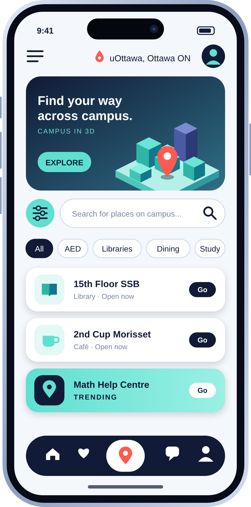

Find your way across campus.
FEATURESDiscover your campus.
Description
UO Navigate is an interactive 3D map of the uOttawa campus that helps students and staff quickly find essential facilities such as libraries, printers, AEDs, study spaces, cafeterias, and more.

Frequently Asked Questions
UO Navigate is an interactive 3D map of the uOttawa campus that helps students and staff quickly find essential facilities like libraries, printers, AEDs, study spaces, and cafeterias.
Libraries, printers, AEDs, study spaces, cafeterias, and more. Check the Features page for the full list.
Campus buildings are large and multi-level. A 3D view makes it easier to recognize buildings and understand where things are, so you spend less time searching and more time getting where you need to go.
You can find all the details on our Pricing page.
Join our mailing list to hear about launches and updates, or meet the people behind the project on the About the Team page.